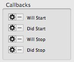
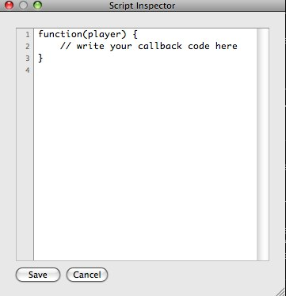

Elysium Scripting Guide
This is a guide to help you get started scripting the generative MIDI sequencer for Mac OS X, Elysium. This guide covers Elysium 0.9.
The core Elsyium sequencer and interface are implemented using Apples Objective-C language and Cocoa frameworks however Elysium also embeds the JavascriptCore Javascript interpreter via JSCocoa. This is the same Javascript interpreter that is used by Safari and WebKit. Elysium exposes a number of "callback" points where user-written Javascript code can be invoked to modify how the sequencer works.
A callback is an anonymous Javascript function, with pre-determined arguments, that is invoked in a specific context that can examine & modify the state of the sequencer. A concrete example would be a function that is called before a note may be played that decides if it should be played or not and, if not, causes the note to be skipped.
Note that the terms token and tool are used throughout the text however tool is deprecated and remains only so long as existing code still uses that terminology. Eventually all references to tool will be changed to token.
In order to understand the environment in which a callback will operate it is useful to understand the structure of the Elysium architecture. There are 5 interlinked components that are responsible for generating music that can be thought of as forming a hierarchical structure:
At each level there are properties that may be either specified directly at that level or inherited from the level above. For example the duration of a note played has a setting at the player level that can be inherited by each layer and, in turn, by each note token on a cell on each layer.
However a layer may override the inherited value with its own default duration that will be inherited by its cells. Further a note on any particular cell can be given it's own specific value separate from other notes on cells of the same layer.
Let's look at the components in a little more detail.
The player is the top-level and acts as the controller for an Elysium performance. Each composition has a single player that is responsible for co-ordinating the layer or layers that make up the composition. The player has a set of controls that define the default behavior for different tokens that are used in the composition. It also houses the script package which is of special interest to scripters and we will cover it later.
A layer is a representation of the harmonic table ranging across many octaves. It is made up of hexagonal cells and acts as a surface upon which tokens can be placed and playheads can move. A composition may have many layers. Each layer represents the same harmonic table and the same notes but the value of having multiple layers is the ability to create different patterns on each layer and to route the output of different layers to different destinations.
As a layer belongs to a player it inherits certain controls from it. The layer, in turn, defines default behaviour for tokens on it's cells.
Although the cells are integral to Elysium from a users perspective they do not play a particularly big role in scripting since their function is, to a great extent, subsumed into the layer. Nevertheless each cell is represented by an object and each cell acts as a holder for the tokens placed upon it.
Tokens are where things happen. When a playhead enters a cell containing each token gets a chance to do it's thing. There is an ordering of the tokens to try and ensure sensible results.
Playheads are the moving representation of the "current position" on the layer. Playheads are spawned onto a by generator tokens and, on each beat, move to the adjacent cell in their current direction until they either die or hit the edge of their layer. When a playhead is spawned it is given a direction and a time to live (TTL) measured in beats. Playheads do not collide and multiple playheads may exist on the same cell.
The player, layers, and tokens are all directly scriptable elements. Cells and playheads can be manipulated by callbacks but do not, themselves, offer callbacks. For example it is not possible to attach a callback to a playhead to be run each time a playhead enters a new cell (although that might be a bad idea).
Scripting in Elysium is about writing callbacks. A callback is an anonymous Javascript function that accepts certain contextual parameters. All callbacks receive a reference to the root player object for the current composition. From there the rest of the hierarchy can, if necessary, be accessed and modified.
You write callbacks using the popup code editor. To create a callback look for the relevant button in the part of the interface you want to script. They will all look something like this:

The button with the gear symbol invokes the script inspector where you can edit the Javascript code for your callback.

The button with the '-' will delete an associated callback.
Note that callbacks should not be edited during a performance but only while the player is stopped.
Note also that the script inspector is both small and basic. Please treat this as an encouragement to keep your callbacks short.
Each time Elysium starts it will load any Javascript code defined in:
~/Application Support/Elysium/userlib.js
The file will be created if it does not already exist.
You can use the user library to define functions, global variables, and classes that you want to make available for use in callbacks.
Elysium provides for 4 different types of callback, essentially contexts in which callbacks are invoked.
Each of the scriptable elements: player, layer, and token can have a will run callback attached. Any attached callback is invoked before the the element takes its action. For example a note token's will run callback is fired before the note plays and could cause the note to be skipped:
function( player, token, playhead ) {
if( token.layer.beatCount %2 == 0 ) {
token.skip;
}
}
After a scriptable element has had a chance to run any corresponding did run callback will be invoked. An example might be to determine if a note token fired or not. The did run callback could respond to the note not firing by raising the probability that it fires next time by 5%:
function( player, token, playhead ) {
if( !token.fired ) {
token.pKnob.value += 5;
}
}
Timers live in the script package and are callbacks that are invoked periodically, e.g. every 30s. You might use this to bring in a layer at a certain point in a composition:
function( player, timer ) {
// Every time the timer fires:
// toggle the first & second layers enabled state
player.layers[0].enabled = !player.layers[0].enabled;
player.layers[1].enabled = !player.layers[1].enabled;
}
A MIDI trigger is a callback that is run in response to a MIDI CC event arriving in Elysium. Typically MIDI CC information is generated when using buttons, faders, or pots on external hardware such as keyboards or controllers. An example use might be to turn specific layers on or off in response to a hardware button:
function( player, message ) {
player.layer[0].enabled = message.value > 63;
}
Or, as a kind of "poor man's MIDI learn" to control the tempo of the player using a pot:
function( player, message ) {
// Tempo ranges from 120 BPM to 300 BPM
player.tempoKnob.value = 120 + ( 180 * ( message.value / 127 ) );
}
An Elysium performance is, loosely, the output of MIDI note-on and note-off messages, routed to various MIDI channels, that are the product of running the player for some length of time.
When the player is instructed to run it initializes itself and its layers, then instructs each layer to run. Each layer runs, independently of the others, on its own native thread.
The layer runloop looks like this:
while running
invoke layer will run callback
advance and cleanup playheads
remove dead playheads
generate new playheads
run all live playheads
run any note token
run any split token
run any rebound token
run any absorb token
run any spin token
update display
update beat count
invoke layer did run callback
sleep until next beat
We have already seen how running a token offers opportunities for will run and did run callbacks.
Note that there is quite a lot of work going on when a layer runs. If there are 20 live playheads each cell must be checked to see which tools it has and then each tool must be run. If you are running at 145BPM that means each beat lasts approximate 0.4s. If a layer takes longer than 0.4s to run you will begin to get clock drift.
This means that you should endeavor to keep the use of callbacks to a minimum and keep callbacks as short as possible. Judege for yourself but the use of long-running or intensive code in callbacks is highly discouraged.
This section will outline the many properties and methods that are available for use in callbacks.
In many cases a property will not be a simple value but will be represented by a knob that has a type, value, minimum and maximum, stepping, enabled state, and possibly inheritance.
Any property represented by a knob may also take on a dynamic value when a low frequency oscillator (LFO) is attached to it (for example an oscillator might vary tempo over time). Knobs encapsulate all of the information required to have both inherited, assigned, and dynamic values.
Each knob has it's own set of properties:
A string containing the name of the knob, e.g. 'duration'.
A pointer to a knob, in the parent element, from which this knob may inherit its value.
A boolean representing whether this knob determines its own value or inherits it from its linkedKnob.
A pointer to an oscillator that can dynamically supply the value of this knob.
A Boolean, Integer, or Float depending upon the type of knob.
If an oscillator is installed the next value from the oscillator.
Each Elysium document has one player responsible for grouping all the scriptable elements. The player is composed of one or more layers and a scripting package.
The tempoKnob value is represented in BPM.
How many beats in a "bar". The Elysium concept of a 'bar' is pretty woolly. Essentially Elysium will play any note corresponding to the first beat of a bar usnig the emphasis velocity rather than the default velocity.
For generators in this player, how many beats each emitted playhead should live.
For generators in this player, how many beats between playheads being emitted.
For notes in this player, the default MIDI velocity when a note is played.
For notes in this player, the emphasis MIDI velocity when a note is played. (See barLengthKnob for more info).
For notes in this player, the number of seconds a note is played (i.e. the time between MIDI note-on and note-off messages)
For notes in this player, the number of notes by which played notes are transposed up or down.
An array containing the layer objects this player is running. I suggest treating this as read-only right now. There is more information about layers later in this guide.
An array containing the MIDI triggers. I suggest treating this as read-only right now. There is more information about MIDI triggers later in this guide.
A pointer to the script package for this player. There is more information about the scripting package later in this guide.
A layer is a surface composed of 204 hexagonal cells arranged in 17 columns of 12 rows each. The cells form a harmonic table where each cell represents one note (in octaves 1-7). The bottom left note is A#1 whilst the top right note is B7. For more information see: http://www.c-thru-music.com/cgi/?page=layout_notemap
Each layer also represents, generally, one MIDI channel. Although this is completely configurable as new layers are created they will be assigned MIDI channels 2, 3, 4, etc. However multiple layers can be safely assigned the same MIDI channel and any note can be overriden to send to any of the MIDI channels.
Each cell may contain any of a number of tokens that determine what happens when a playhead enters the cell. The exception is the generator token which emits new playheads at specific intervals, rather than when playheads arrive (by comparison see the split token).
Determines whether the layer runs or not.
Controls which MIDI channel notes on the layer send to. Value can range from 1 to 16.
See Player#tempoKnob.
See Player#barLengthKnob.
See Player#timeToLiveKnob.
See Player#pulseCountKnob.
See Player#velocityKnob.
See Player#emphasisKnob.
See Player#durationKnob.
See Player#transposeKnob.
Each cell has a slot for each of the types of token that can be defined.
Integer property giving the "column" the cell is in (0 based)
Integer property giving the "row" the cell is in (0 based)
Reference to the layer object this cell resides on.
Reference to the note object describing the note this cell represents in the harmonic table.
Reference to the generator token (if any) on this cell.
Reference to the note token (if any) on this cell.
Reference to the rebound token (if any) on this cell.
Reference to the absorb token (if any) on this cell.
Reference to the split token (if any) on this cell.
Reference to the spin token (if any) on this cell.
Returns the neighbour cell in the specified direction. Direction is a value from 0..5
Cells on the edges of the layer will have nils where there is no neighbouring cell in a particular direction.
Remove all tokens defined on the cell.
Adds the specified tool to the cell. Note that, at this time, the creation of tools is not supported by the API.
Removes the specified tool from the cell.
Copies all tokens on the specified cell to this cell overwriting any duplicated tokens on this cell.
A token is placed on a cell and (with one exception) creates an effect as a playhead enters cell. Each cell can have multiple tokens stacked on it to create different combinations of effect. It is legal, for example, to combine a generator, note, rebound, and, absorb token on the same cell. Within reason Elysium will try to do the right thing so, in the given example, the absorb and rebound tokens will only affect playheads entering the cell and not those emitted by the generator.
Note that the terminology in the app is that tokens are called tools. This is legacy terminology that will, over time, be eliminated. Where possible please use 'token' and not 'tool'.
A boolean property (not a knob) that indicates whether the token is enabled. A disabled token does not run at all so you cannot use it's own callbacks to re-enable it.
A reference to the cell this token sits on.
Generator tokens are polled, on each beat, to see if they should emit a new playhead.
enabled
pKnob [integer,not inherited,default=100]
The probability that this generator will emit a new playhead when the beat count reaches its pulseCount.
The value of this knob indicates the compass direction in which new playheads will begin. These are:
NW
timeToLiveKnob [integer,inherited]
See Layer#timeToLiveKnob
See Layer#pulseCountKnob
The offet represents the number of beats before or after the pulseCount beat that this generator will emit a new playhead. That is a generator will offsetKnob value set to 1 will emit a playhead one beat later than one with the default of 0.
Note tokens are the heart of Elysium since it is these that generate the MIDI on and MIDI off messages that actually make your instruments play! Whenever a playhead passes over an enabled note token it will generate MIDI to play the note corresponding to it's cell in the harmonic table. To see which cells correspond to which notes turn on display of notes in the Layer menu.
enabled
pKnob [integer,not inherited,default=100]
velocityKnob [inherited]
See Layer#velocityKnob.
See Layer#emphasisKnob.
See Layer#durationKnob.
The value of this knob indicates, when a note is played, whether a triad is played. 0 means no triad is played, other values correspond to the triad groups: [insert groups here]
When the value of this knob is set to true the MIDI channel information from the layer is ignored and note information is sent for every channel that is enabled in the channelSends array.
An array of boolean knobs, one for each channel, that indicate whether MIDI information should be sent to that channel or not.
Rebound tokens change the direction of playheads that pass over them.
enabled
pKnob [integer,not inherited,default=100]
directionKnob [integer,not inherited,default=0]
The value of this knob indicates the compass direction to which entering playheads will be redirected. These are:
Absorb tokens destructively consume playheads that pass over them. This is, typically, the last token to be processed so an entering playhead will trigger notes and splits. Newly generated playheads will not be absorbed.
enabled
pKnob [integer,not inherited,default=100]
A split token consumes the entering playhead and emits new playheads in all directions except the direction of the entering playhead (although see the bounceBackKnob). These cloned playheads keep the remaiinng time to live of the original playhead.
enabled
pKnob [integer,not inherited,default=100]
bounceBackKnob [boolean,not inherited,default=false]
When true a clone playhead is sent back in the direction the entering playhead came from (i.e. a playhead will be emitted in all 6 compass directions).
Unlike the other tokens the spin token operates on generate and rebound tokens on the same cell. When the a playhead crosses the spin token the direction of any generator or rebound tokens on the same cell is altered.
enabled
pKnob [integer,not inherited,default=100]
clockwiseKnob [boolean,not inherited,default=true]
If the value is true then the direction will be stepped clockwise, otherwise anti-clockwise.
The value determines the number of steps (compass points) by which the direction is changed.
Tripwire tokens are not implemented in Elysium 0.9
Trap tokens are not implemented in Elysium 0.9
Wormhole tokens are not implemented in Elysium 0.9
Oscillators can be attached to any integer or float knob and generate dynamic values within the range of acceptable values for the knob. There are a number of different types of oscillator.
The API for the oscillators will be described in a future version of this document.
The script package is a means to expose variables, that can be used by script authors, to the UI of the application.
The current script package contains 8 flags, 8 sliders, and 4 timers. The user can display the script package using the View menu's Show Script Package command.
The flags are boolean properties labelled f1 ... f8
The variables are float properties labelled v1 ... v8. For each variable there are corresponding properties to specify the minimum and maximum values, e.g. v1min and v1max.
The timers are pointers to timer callback objects, labelled timer1 ... timer4 that have their own associated delay and scripts. Whenever a timer fires its associated ruby script is invoked with a reference to the player (through which it can access the script package, layers, and the rest of Elysium), and the timer that has expired. The timer API will be described in a later version of this guide.
Elysium can process incoming MIDI CC messages and route them to callback scripts called MIDI triggers. To see the MIDI configuration use the View menu | Show MIDI Configuration. Whenever a MIDI trigger is called it is called with a reference to the player (through which it can access the script package, layers, and the rest of Elysium), the MIDI CC number and the CC value. The MIDI trigger API will be described in a later version of this guide.
For support check out Get Satisfaction or the #midi channel on FreeNode IRC.